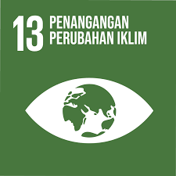

APA ITU SDGS?
SDGs merupakan serangkaian tujuan yang diterapkan oleh Perserikatan Bangsa-Bangsa (PBB) untuk mencapai kehidupan yang lebih baik dan berkelanjutan bagi semua orang. Terdapat 17 tujuan SDGs yang saling berhubungan dan saling mendukung untuk mengatasi berbagai tantangan global yang sedang kita hadapi. Indonesia menjadi salah satu dari banyaknya negara yang berkomitmen melaksanakan SDGs, karena sesungguhnya SDGs merupakan agenda jangka panjang yang menjadi fokus dalam visi pembangunan di Indonesia.
Saya mengambil fokus utama pada SDGs nomor 13 yang berbunyi, “Mengambil tindakan cepat untuk mengatasi perubahan iklim dan dampaknya.†Ini bertujuan untuk memberi dorongan kepada negara-negara dunia untuk bertindak cepat dan efektif dalam mengurangi penyebab perubahan iklim dengan beradaptasi.
Berikut ini merupakan targetnya secara rinci; Memperkuat ketahanan dan kapasitas adaptasi terhadap bahaya terkait iklim dan bencana alam di semua negara Mengintegrasikan langkah-langkah perubahan iklim ke dalam kebijakan, strategi dan perencanaan nasional Meningkatkan pendidikan, peningkatan kesadaran, serta kapasitas manusia dan kelembagaan dalam mitigasi, adaptasi, pengurangan dampak, dan peringatan dini perubahan iklim. Melaksanakan komitmen yang dibuat oleh negara-negara maju yang menjadi pihak dalam Konvensi Kerangka Kerja PBB tentang Perubahan Iklim dengan tujuan memobilisasi dana bersama sebesar $100 miliar setiap tahunnya pada tahun 2020 dari semua sumber untuk memenuhi kebutuhan negara-negara berkembang dalam konteks tindakan mitigasi yang bermakna dan transparansi pelaksanaan, serta mengoperasionalkan sepenuhnya Dana Iklim Hijau melalui kapitalisasi dana tersebut sesegera mungkin. Mempromosikan mekanisme untuk meningkatkan kapasitas perencanaan dan pengelolaan perubahan iklim yang efektif di negara-negara kurang berkembang dan negara kepulauan kecil yang sedang berkembang, termasuk dengan fokus pada perempuan, pemuda, dan masyarakat lokal serta terpinggirkan.
